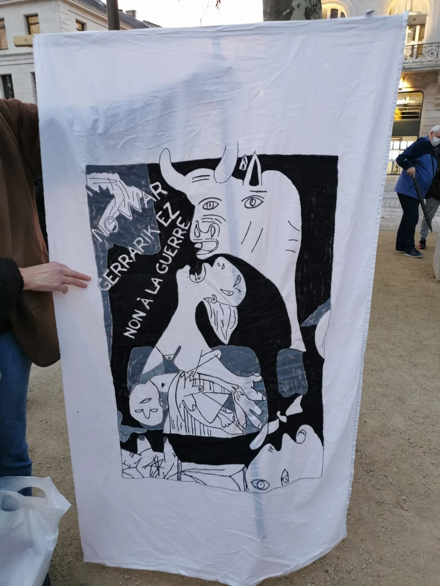

Publication d’archives
Rassemblement pour la PAIX
Date indiquée par Facebook · 4 mars 2022
Texte conservé avec la publication
Contexte du dossier
Le compte rendu du 4 mars restitue la déclaration communiste au rassemblement de Niort ; un second message du soir en rappelle l’objet, la paix. Le texte condamne la responsabilité militaire de Poutine, défend une négociation sous égide de l’ONU et une sécurité collective européenne. Il affirme aussi que l’accueil des Ukrainiens doit tenir à leur qualité de réfugiés, comme pour les personnes fuyant d’autres guerres. Une minute de silence, la lecture de Barbara de Prévert et plusieurs interventions sont rapportées. L’humanité commune ne peut être découpée selon la couleur de peau ou le continent d’origine.

Sources
Archive rouge · export Facebook · AR-0002-FB-01937
À lire aussi · Protéger les Kurdes de France